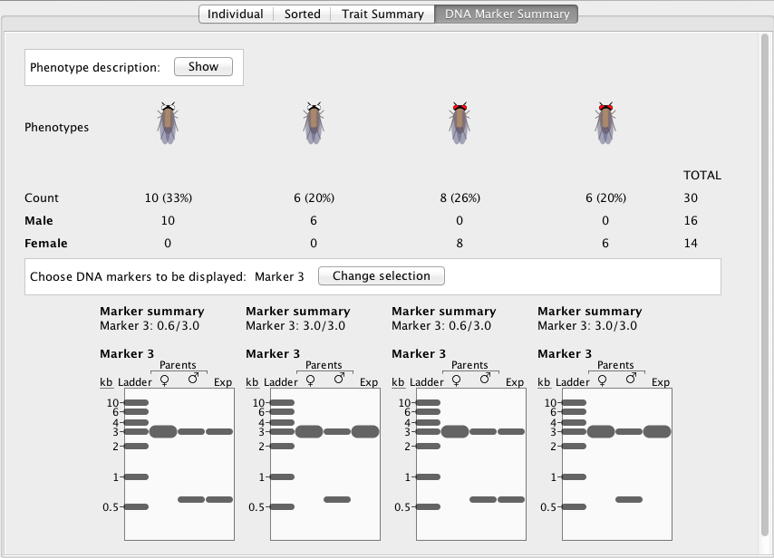

StarGenetics can be used to teach a range of genetics concepts, from simple dominance to complex gene interactions:
StarGenetics exercises are written using an Excel Workbook. StarGenetics on support XLS format (Excel 97-2004), to save exercise in XLS format use "File->Save As...". By modifying the Excel Workbook you can generate new source files for exercises that you design. The Excel Workbook contains all the instructions you need to modify and build new exercises.
All the visualizers available for StarGenetics (Cows, Fish,Fly,Peas,Smiley Face, and Yeast)use versions of the same Excel Workbook. Each workbook associated with a visualizer provides various examples of how to specify genotype and phenotype relationships and gene interactions in StarGenetics.
In addition, StarGenetics supports the use of DNA markers for genetic mapping. DNA marker functionality is available in both theFly and Fish visualizers.
|
 Example of DNA marker functionality for the Fly visualizer (click image for larger view) |
Some of the phenotypes that can be specified in the StarGenetics Excel Workbook forCow,Fly, Fish, and Smiley Facevisualizers are color phenotypes. Color phenotypes are specified using a word description. To see available color phenotypes and their corresponding word description click on the following link: